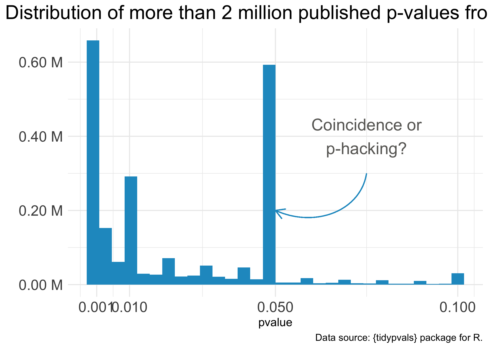

6 Notes on the p-value
6.1 What the p-value is
The p-value is a measure of statistical evidence
The p-value is a measure of statistical evidence, not of importance, effect size, or truth. When computed from data, it is a measure of compatibility between the observed data and what we would predict or expect to see if a proposed statistical model, often called the “null hypothesis,” is correct. A p-value represents the probability of obtaining a test statistic as extreme as, or more extreme than, the one computed from the data, assuming the null hypothesis is true. This is based on the principle of tail area in a distribution (Kline, 2013).
The p-value is a conditional probability
The p-value is a conditional probability. It is computed under the assumption that the null hypothesis is true and gives the likelihood of the observed (or more extreme) data under this assumption (Goodman, 2014). The p-value does not tell us the probability of the null hypothesis being true. Instead, it tells us how surprising our data is if the null hypothesis is true.
The p-value is used to make decisions in hypothesis testing
A p-value is used to make decisions in hypothesis testing. Traditionally, if the p-value is less than or equal to a pre-specified significance level (often 0.05), the null hypothesis is rejected, and the alternative hypothesis is considered to have support from the data. However, it is important to note that this decision-making process is not infallible, and can lead to Type I (rejecting a true null hypothesis) or Type II (failing to reject a false null hypothesis) errors (Kirk, 1996).
The p-value is a function of observed data
The p-value is a function of observed data, calculated for a specific statistical model, the null hypothesis. As such, it is subject to sampling variability. In addition, the p-value can be influenced by aspects of study design and data quality, including sample size, measurement error, and violations of statistical assumptions (Warne, 2017).
The p-value can be used to gauge the strength of evidence against the null hypothesis
The p-value can be used as a tool to gauge the strength of evidence against the null hypothesis. Smaller p-values indicate stronger evidence against the null hypothesis. However, the p-value should not be interpreted in isolation but considered alongside other factors such as the context of the study, the plausibility of the null hypothesis, the size of the effect and its practical significance, as well as other related evidence (Fidler, 2010).
The p-value can vary across replications
P-values can vary across replications due to sampling variability. A small p-value in one study does not guarantee a small p-value in another study, even if the same null hypothesis is being tested (Open Science Collaboration, 2015).
The p-value is just one piece of the statistical puzzle
While the p-value provides a measure of evidence against a null hypothesis, it is just one piece of the statistical puzzle. It should be interpreted in the context of the research question, study design, quality of data, and alongside other statistical estimates such as confidence intervals and effect sizes. Researchers should also consider the practical significance of their findings and not solely rely on statistical significance to make conclusions (American Psychological Association, 2010; Wasserstein & Lazar, 2016).
The p-value is a tool to help understand uncertainty
The p-value is a tool to help us understand uncertainty. While it cannot tell us whether a particular result will be replicated or how large the effect is, it can help us understand how much confidence we might place in the results given the data and statistical model we have. It provides a way of quantifying how compatible our data is with a specified statistical model, the null hypothesis (Kieffer, Reese, & Thompson, 2001).
Remember, statistical significance does not automatically imply scientific or practical significance. Nor does a high p-value necessarily mean that there is no effect or association in the population. It could be that your sample size was too small to detect an effect, or that your study was not well designed to answer the specific question at hand. Always interpret p-values in the context of the study design and alongside other relevant information (Cumming, 2008).
The p-value is a cornerstone of frequentist statistics
The p-value is a cornerstone of frequentist statistics, which is one of the main statistical paradigms used in scientific research. While it is not without its criticisms, the p-value has been widely adopted in many fields of study as a standard measure of statistical evidence. It is important to understand its definition and correct interpretation to ensure it is used appropriately and its value is communicated effectively in research reports (Wasserstein & Lazar, 2016).
6.2 What the p-value is NOT
The p-value is NOT the likelihood that a result is due to chance
“When \(p\) is calculated, it is already assumed that \(H_0\) is true, so the probability that sampling error is the only explanation is already taken to be [100 percent]. It is thus illogical to view \(p\) as measuring the likelihood of sampling error. thus, \(p\) does not apply to a particular result as the probability that sampling error was the sole causal agent. there is no such thing as a statistical technique that determines the probability that various causal factors, including sampling error, acted on a particular result. instead, inference about causation is a rational exercise that considers results within the context of design, measurement, and analysis. Besides, virtually all sample results are affected by error of some type, including measurement error.”
The p-value is NOT the likelihood that a result is due to chance under the null hypothesis.
“That this is not the case is seen immediately from the P value’s definition, the probability of the observed data, plus more extreme data, under the null hypothesis. The result with the P value of exactly .05 (or any other value) is the most probable of all the other possible results included in the”tail area” that defines the P value. The probability of any individual result is actually quite small, and Fisher said he threw in the rest of the tail area “as an approximation.”
The p-value is NOT the likelihood that a Type 1 error has occurred
“[T]he p-value represents the probability of making a Type I error if the null hypothesis is perfectly true…
The p-value does not give you the probability that you have made a Type I error in reality. The phrase “if the null hypothesis were perfectly true” is the key to avoiding this misinterpretation. If H0 is not an absolutely perfect statistical model for reality (perhaps because of tiny differences between group means in the population, or just because the null is completely wrong), then the probability expressed in a p-value may not be accurate (Kirk, 1996). It is still a useful statistic, however, especially because it can help us make rational decisions about how well the null hypothesis matches the data in a study (Wasserstein & Lazar, 2016; Winch & Campbell, 1969).
The p-value is NOT the likelihood that \(H_0\) is true
“The \(p\) value does not say anything about the probability that the null hypothesis is true because the p-value is calculated under the scenario that the null hypothesis is perfectly true (Fidler, 2010). As a result, \(p\) cannot tell us whether the null hypothesis is true because we had to assume it was true in the first place to calculate \(p\) (Haller & Krauss, 2002). Likewise, a p-value cannot tell us whether the alternative hypothesis is true because \(p\) is based on the assumption that the null hypothesis is perfectly true.”
\(1 -\) p-value is NOT the likelihood that the result will be replicated
“p says very little about the replicability or stability of results (Schmidt, 1996). Indeed, p-values fluctuate wildly across studies (Cumming, 2008). It is true, though, that (generally speaking) low p-values indicate that the null hypothesis may possibly be easier to reject in the future (Cumming & Maillardet, 2006). However, this assumes that the replications are conducted under precisely the same conditions as the original study, with every possible relevant (and irrelevant) factor perfectly replicated. In real life, a low p-value does not necessarily mean that you will get similar results if you conducted the same study again. In fact, attempts to replicate studies with low p-values often do not succeed (Open Science Collaboration, 2015). If the sample size is small or if the sample is not representative of the population in some way (as occurs frequently with nonrandom samples), the results may be unstable and not replicable, even if p is very low and the null hypothesis is strongly rejected. The best way to determine whether the results of a study will replicate is to conduct a replication.”
The p-value is NOT an indicator of how important the findings are
The p-value says nothing about the importance of findings (Kieffer, Reese, & Thompson, 2001). Remember that importance is an issue of practical significance – not statistical significance. There is nothing magical about an α value less than .05. Decisions about policy, psychological interventions, and other practical implications of research should be based on more than just a p-value. Such important decisions should not be based on a statistic that is vulnerable to changes in sample size and study conditions (Wasserstein & Lazar, 2016).
The p-value is NOT an indicator about the size of an effect
“p-values indicate the size of an effect (e.g., the difference between means or the magnitude of the relationship between variables). For example, a researcher finding that p is greater than α (indicating that the null hypothesis should be retained) may decide that the results are”insignificant” or irrelevant. This confuses p-values with effect sizes. Effect sizes quantify the strength of mean group differences or variable relationships; p-values do not (Wasserstein & Lazar, 2016). If the sample size is small or the study has low statistical power, then there could be a large effect size that is worth discussing, even if p is too high to provide evidence to reject the null hypothesis… Understanding the strength of relationships or the magnitude of group differences is important – and that is why it is essential to calculate and report an effect size to accompany a null hypothesis statistical significance test (American Psychological Association, 2010; Wasserstein & Lazar, 2016).”

The misinterpretation of p-values and its consequences have been a disaster on academia
